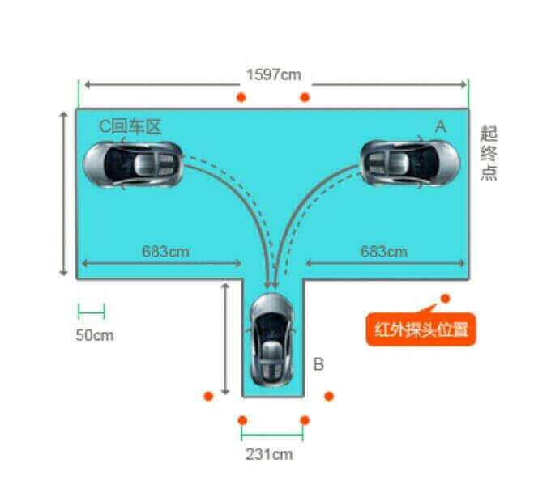

操作要求

整个考场为一个“凸”字型，考生驾车进入考场后开始考试，此时，“凸”字上方凸起的车库应在车辆前进方向右侧，考生应先将车辆驾驶至“凸”字左侧尽头边线前，然后向右后方倒车入库，中间不能停顿。入库后向左前方行驶至“凸”字右侧尽头边线前，再向左后侧倒车入库，完成考试。
评判标准
1不按规定路线、顺序行驶的，不合格;
2车身出线的，不合格;
3倒车不入的，不合格;
4中途停车的，不合格。
5超过4分钟未完成倒车入库不合格。
操作方法
右倒库
1轻抬离合使车后移，控制好车速，看左后视镜，当右起点感应线出现在左后视镜位置时把转向盘右打死。
2把转向盘右打死，继续后移，中间不能停车，同时观察右后视镜，至最右边线露出后，保持车身与库角距离30CM(小于30CM回半圈方向盘调整，大于30CM继续右打死方向盘，车身正还是大于30CM，可能是看1点时方向盘打的慢，下次提前或加快打方向速度)。继续后移，当右后视镜库边线与车身平行时，方向盘回正，调正车身，倒车入库。
3倒库入底时看左后视镜，当库前边线在左后视镜位置时，停车，倒库完成。
4出库，挂一档前行，当车前头盖刚看不到路边线时，把转向盘左打死，当车身正时，回正方向，前车轮过左起点感应线，停车。
左倒库
5轻抬离合使车后移，看左后视镜，当左起点感应线稍微过左后视镜，到位置时把转向盘左打死。
6把转向盘左打死，继续后移，中间不能停车，同时观察左后视镜，至最左边线露出后，保持车身与库角距离30CM(小于30CM回半圈方向盘调整，大于30CM继续右打死方向盘，车身正还是大于30CM，可能是看1点时方向盘打的慢，下次提前或加快打方向速度)。继续后移，当左后视镜库边线与车身平行时，方向盘回正，调正车身，倒车入库。
7方向盘回正，倒库入底。看左后视镜，当库前边线出在左后视镜位置时，停车，倒库完成。
8出库，挂一档前行，当车前头盖刚看不到路边线时，把转向盘右打死，当车身正时，回正方向，前车轮过左起点感应线，停车。